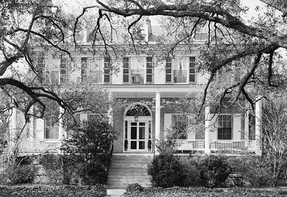
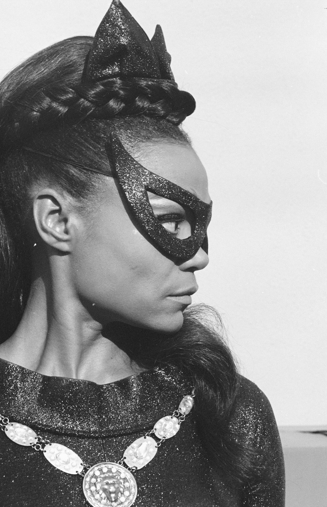

1927
Born Eartha Mae Keith January 17, 1927 on a South Carolina cotton plantation
Born Eartha Mae Keith January 17, 1927 on a South Carolina cotton plantation
Began her Broadway career.
Appeared in the original Broadway theatre production of Carib Song
"Under the Bridges of Paris" makes the UK Top 10
Released her 6th US Top 30 entry "Just an Old Fashioned Girl"
Eartha Kitt and John William McDonald married in a quiet civil ceremony on June 6th 1960.
Honored with a star on the Hollywood Walk of Fame.
Eartha's only child Kitt (McDonald) Shapiro was born on November 26, 1961 in LA
Divorced John William McDonald.
Starred in Batman as Catwoman.
"The price we pay for being ourselves is worth it."
-- Eartha Kitt